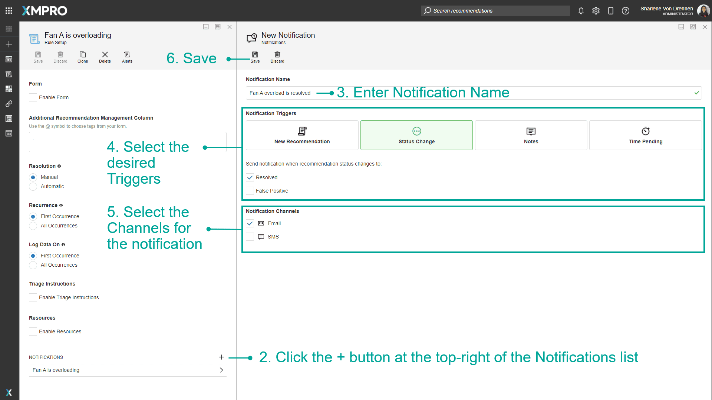
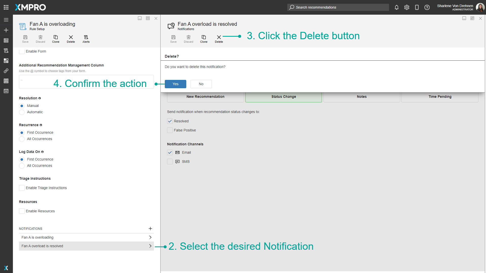

Manage Notifications
A Notification defines how users will be notified when a Recommendation Alert is triggered by a critical event that meets the conditions set in a Rule. This is useful when you want to send a text, email, or another form of communication to users when something goes wrong and is caught by the Rule's condition.
Note
It is recommended that you read the articles listed below to improve your understanding of Recommendations.
Creating Notifications
To create a Notification, follow the steps below:
- Open existing or Create a new Rule.
- Click the + button at the top-right of the Notifications list.
- Enter Notification Name.
- Select the desired Triggers.
- Select the Channels for the Notification.
- Save.

Clone Notifications
To clone an existing Notification, follow the steps below:
- Open existing Rule.
- Select the desired Notification.
- Click the Clone button.
- Enter Notification name.
- Confirm the action.

Delete Notifications
To delete an existing Notification, follow the steps below:
- Open existing Rule.
- Select the desired Notification.
- Click the Delete button.
- Confirm the action.

Last modified: September 01, 2025